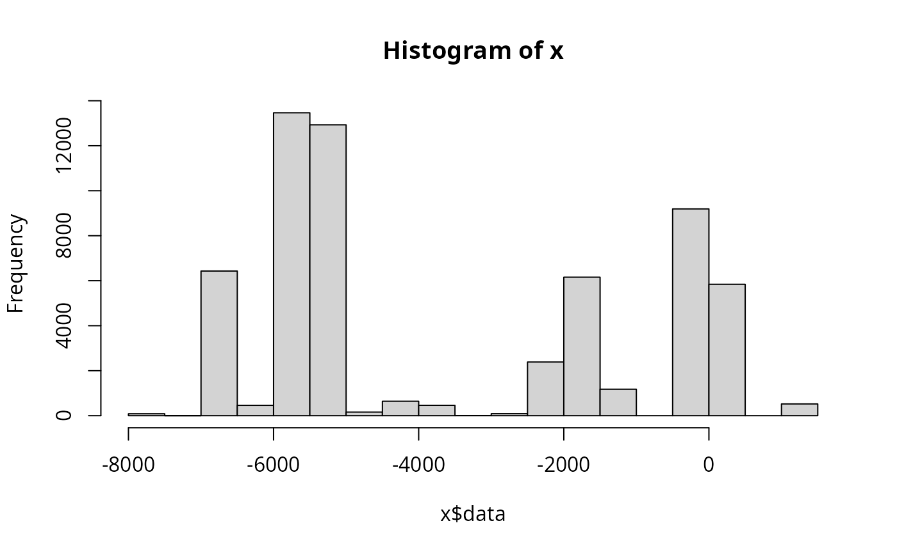
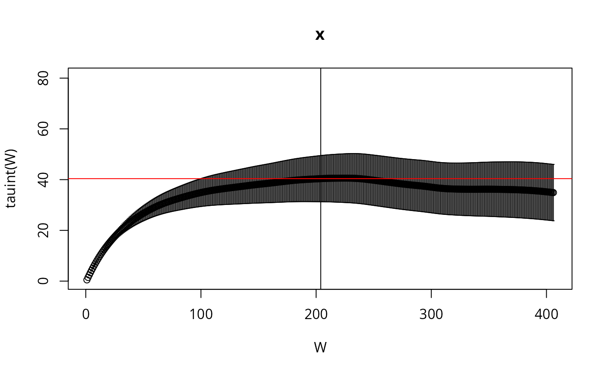

Uncertainty Quantification of AKAP79 (deterministic model)
sampleAKAP79.RmdTo take a sufficiently large sample of AKAP79, we shall use MPI and
parallel tempering. There are several ways to launch MPI processes
(e.g. spawn processes). We will use the simplest form: launch all MPI
workers right from the start, using mpirun -N 8 (or
similar) and have all processes communicate on
MPI_COMM_WORLD, this requires very minimal MPI code in R.
This approach doesn’t allow us to adapt the number of temperatures,
which is probably not optimal but makes it easier to write and
understand the code and increases performance significantly compared to
a sequential Markov chain.
The R code we are going to execute is not a code block on this page
that we run in an interactive R session. Instead, it has to be a file
that we pass on to mpirun.
In this article we show the results of a parallel tempering SMMALA (simplified manifold Metropolis adjusted Langevin algorithm) run. The article titled Parallel chains with MPI explains how to prepare the R-script for mpirun execution – it includes the listing of the script we used in this article.
Create C Source Code
First we load the model in its SBtab form and create all derived model files. We do this step only once and have the MPI part of the process load the coimpleted results of this:
f <- uqsa::uqsa_example("AKAP79")
sb <- SBtabVFGEN::sbtab_from_tsv(f)
#> [tsv] file[1] «AKAP79_Compound.tsv» belongs to Document «AKAP79»
#> I'll take this as the Model Name.
#> AKAP79_Compound.tsv AKAP79_Experiments.tsv AKAP79_Expression.tsv AKAP79_Input.tsv AKAP79_Output.tsv AKAP79_Parameter.tsv AKAP79_Reaction.tsv X0uM_cAMPCaN_AKAP79_0_nM_cAMP.tsv X0uM_cAMPCaN_only_0_nM_cAMP.tsv X0uM_cAMPno_CaN_0_nM_cAMP.tsv X1000nM_cAMPCaN_AKAP79_1_uM_cAMP.tsv X1000nM_cAMPCaN_only_1_uM_cAMP.tsv X1000nM_cAMPno_CaN_1_uM_cAMP.tsv X100nM_cAMPCaN_AKAP79_100_nM_cAMP.tsv X100nM_cAMPCaN_only_100_nM_cAMP.tsv X100nM_cAMPno_CaN_100_nM_cAMP.tsv X2000nM_cAMPCaN_AKAP79_2_uM_cAMP.tsv X2000nM_cAMPCaN_only_2_uM_cAMP.tsv X2000nM_cAMPno_CaN_2_uM_cAMP.tsv X200nM_cAMPCaN_AKAP79_200_nM_cAMP.tsv X200nM_cAMPCaN_only_200_nM_cAMP.tsv X200nM_cAMPno_CaN_200_nM_cAMP.tsv X500nM_cAMPCaN_AKAP79_500_nM_cAMP.tsv X500nM_cAMPCaN_only_500_nM_cAMP.tsv X500nM_cAMPno_CaN_500_nM_cAMP.tsvCreate the ODE interpretation (output omitted)
m <- SBtabVFGEN::sbtab_to_vfgen(sb)
ex <- SBtabVFGEN::sbtab.data(sb,m$conservationLaws)
saveRDS(sb,file="AKAP79-sb.RDS")
saveRDS(ex,file="AKAP79-ex.RDS")The next step is to generate the code, write it into a file ending in
.c and compiling it into a shared library:
C <- uqsa::generateCode(m)
cFile <- sprintf("./%s_gvf.c",comment(sb)) # GSL Vector Field file name
cat(C,sep="\n",file=cFile) # write sources to that file
modelName <- uqsa::checkModel(comment(sb),cFile) # this compiles the sources
#> building a shared library from c source, and using GSL odeiv2 as backend (pkg-config is used here).
#> cc -shared -fPIC `pkg-config --cflags gsl` -o './AKAP79.so' './AKAP79_gvf.c' `pkg-config --libs gsl`Sample via MPI
Here we run a prepared R script from the command line (any POSIX shell will do: bash/zsh/fish/dash)
N=4 # by default
[ -e '/proc/cpuinfo' ] && N=$((`grep -c processor /proc/cpuinfo`)) && nm="`grep -m1 'model name' /proc/cpuinfo`"
echo "We will use $N cores with $nm"
start_time=$((`date +%s`))
date
mpirun -H localhost:$N ./pt-smmala-akap79.R 16000 > akap79.log
date
end_time=$((`date +%s`))
echo "Time spent sampling: $((end_time - start_time)) seconds ($(( (end_time - start_time)/60 )) minutes)."
#> We will use 16 cores with model name : Intel(R) Xeon(R) CPU E5-2630 v3 @ 2.40GHz
#> Wed 12 Mar 2025 04:55:53 PM CET
#> Wed 12 Mar 2025 04:55:53 PM CET
#> Time spent sampling: 0 seconds (0 minutes).On a high performance computing (hpc) cluster, the above would be in a slurm script or similar workload manager.
Inspect the Results
Here we check the integrated auto-correlation length (Markov chain time)
Sample <- readRDS(file="AKAP79-temperature-ordered-pt-smmala-sample-2-for-rank-0.RDS")
n <- NROW(Sample)
l <- attr(Sample,"logLikelihood")
plot(l,type="l",xlab="mcmc index",ylab="log-likelihood")
if (require(hadron)){
res <- hadron::uwerr(data=l,pl=TRUE)
tau <- ceiling(res$tauint + res$dtauint) # upper bound
}
#> Loading required package: hadron
#>
#> Attaching package: 'hadron'
#> The following object is masked from 'package:base':
#>
#> kappa
We reduce the sample for plotting purposes, by showing only every \(\tau_{\text{int.}}\)-th point and create a pairs plot for the first 6 parameters:
X <- Sample[seq(1,n,by=tau),]
colnames(X) <- rownames(sb$Parameter)
if (require(hexbin)){
hexbin::hexplom(X[,seq(6)],xbins=12)
} else {
pairs(X[,seq(6)])
}
#> Loading required package: hexbin